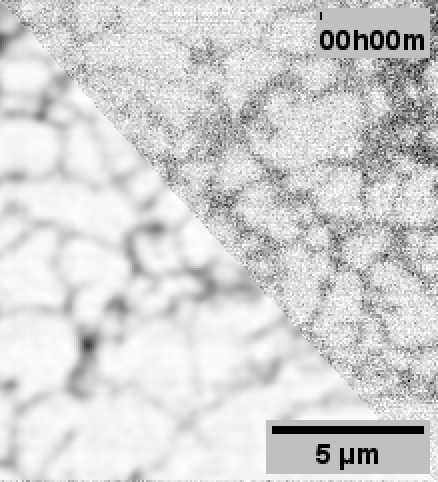
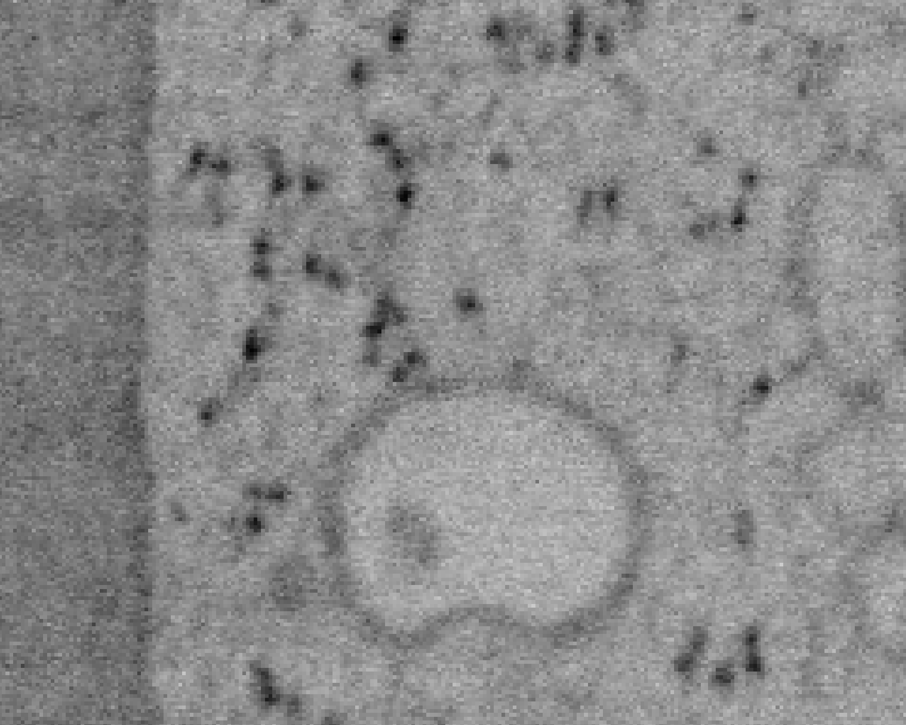
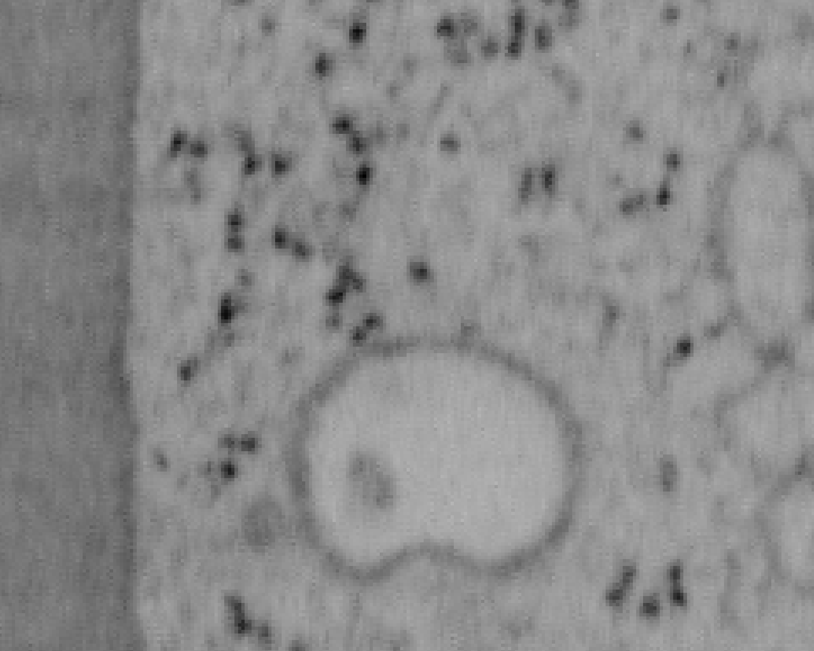
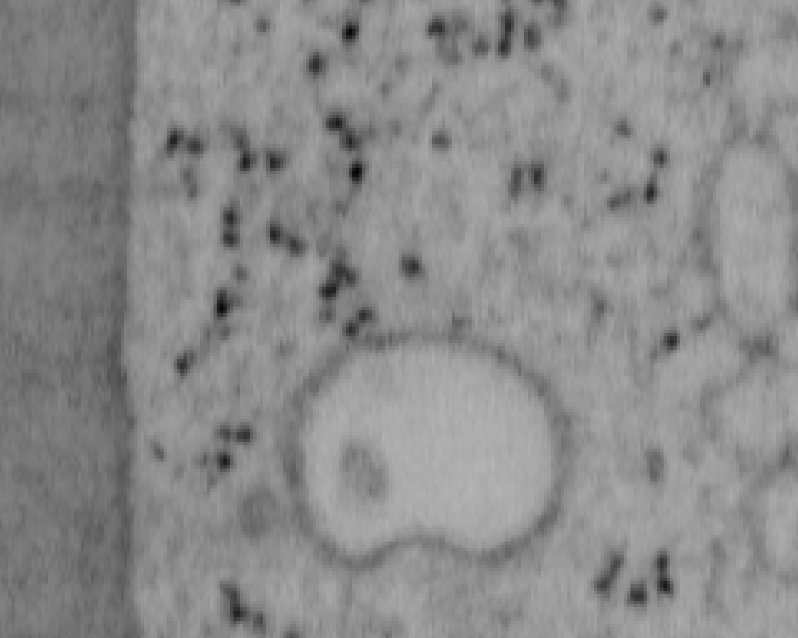

Pyramid of frustration
A successful live-cell fluorescence microscopy experiment needs to balance spatial/temporal -resolution, sample viability, and image quality which collectively form the “pyramid of frustration”.
If the camera exposure time is too long, then motion blur becomes a problem. Shortening the exposure time sacrifices image quality–unless the laser power is increased1. But higher laser power leads to increased odds of phototoxicity (compromising the experiment) and photobleaching (limiting the number of useful images while contributing to phototoxicity).
Image restoration with deep learning
Deep learning image resolution techniques can handle images with very poor signal-to-noise ratios. Relaxed image quality constraints allow for faster and/or gentler imaging.
3DRCAN

When performing the experiments for the paper, 3DRCAN was among the state-of-the-art image restoration techniques.
There were two downsides to 3DRCAN which limited its use in the paper.
- Requires paired images (low/high quality) for training
- Potential to hallucinate at very low signal to noise ratios
Difficulties with obtaining paired training data
We used an epithelial cell line (A431) stably expressing:
| Marker | Tagged fluorescent protein |
|---|---|
| Desmosome | Desmoplakin-EGFP |
| ER 2 | mApple-VAPB |
Fixation3 and mounting4 conditions were carefully optimized to preserve ER integrity and cell morphology.
mApple-VAPB’s fixation-induced brightness reduction necessitated longer exposure times and/or higher laser power. However, the spinning disk confocal microscope used to be in a room with poor temperature stability which can lead to stage/sample drift. The longer it takes to acquire a z-stack, the higher the risk of misregistration between the matching datasets which would hamper 3DRCAN performance.
ER morphology in A431 cells can be quite varied–especially as a function of mApple-VAPB expression. To ensure robustness of training data (ER morphology, mApple-VAPB expression levels), 37 datasets were used.
Overall, obtaining training paired data was a bit of a hassle.
Artefacts from 3DRCAN
Although 3DRCAN did great with ER tubules, the restoration of ER sheet-like structures (especially in the dense perinuclear region) was a little suspect. Denoising of other fluorescence microscopy data used Noise2Void–which notably does not require paired training data.
Noise2Void (N2V)
One reason to like Noise2Void is that its training data can consist solely of noisy images.
Note: Fixed pattern noise (from the sCMOS camera) is still visible after N2V, but it was dramatically reduced with 3DRCAN.


N2V2
Previous examples showed the power of image restoration on fluorescence microscopy datasets, but electron microscopy datasets can also be denoised!
The total acquisition time for one of our FIBSEM datasets took 8 days. Scope time is precious, so scanning slower is not an option. Increasing beam energy could lead to sample damage or deeper penetration–when we only want the surface.
Noise2Void was initially applied to the Focused Ion Beam Scanning Electron Microscopy (FIBSEM) datasets, but checkerboard artefacts hindered automated segmentation of certain objects.
Fortunately during paper revisions, N2V2 became available!
Compare between raw, Noise2Void, and N2V2 below.



Footnotes
(and the fluorophore can handle it)↩︎
Did you know Sec61B has reduced abundance in certain peripheral tubules?↩︎
ER is generally not well-preserved with typical chemical fixation protocols, but I didn’t know how to cryofix yet.↩︎
We saw more flattening with ProLong Glass than with ProLong Gold.↩︎